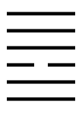
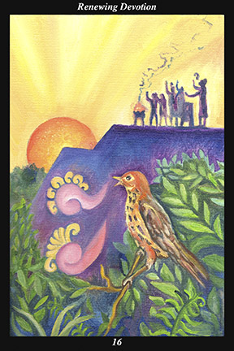

 | IMAGEOn the platform of a pyramid, a group of male and female warriors greet the dawn with ceremonial fire, drum, and song. Out among the surrounding vegetation, a bird greets the dawn with two speech glyphs, one of which represents a flower and the other a song. |